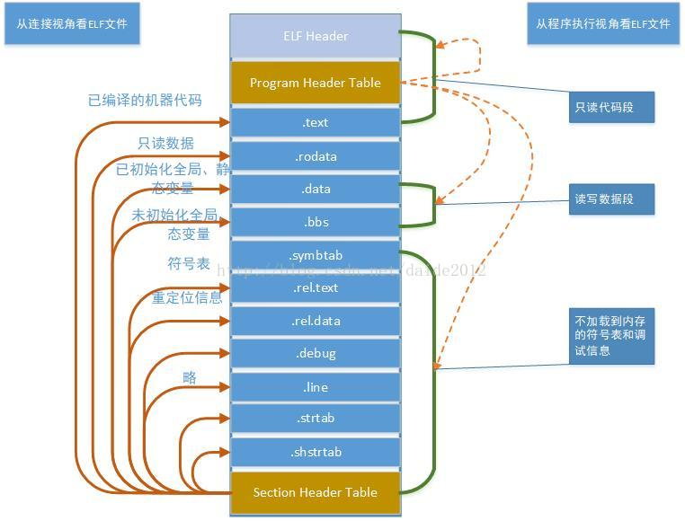
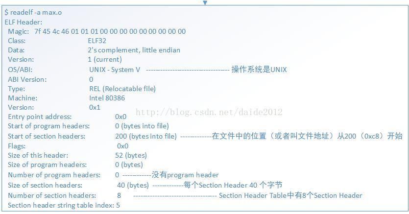
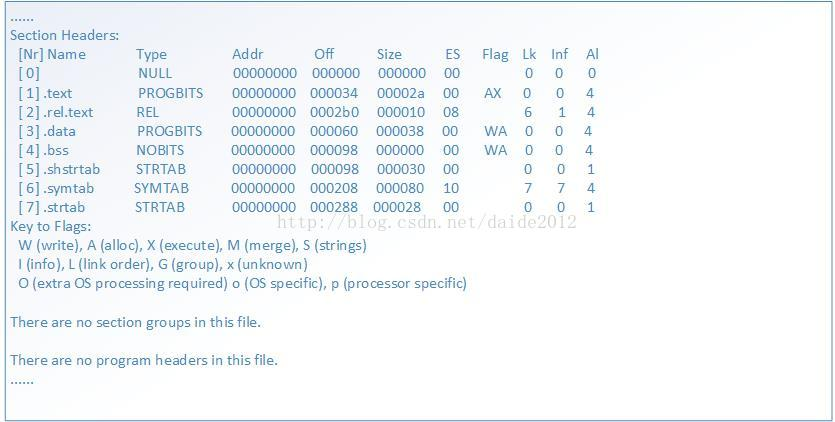
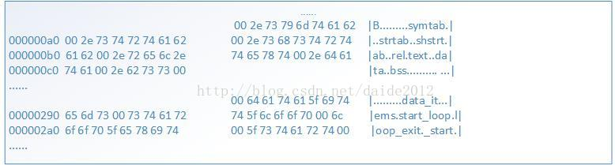
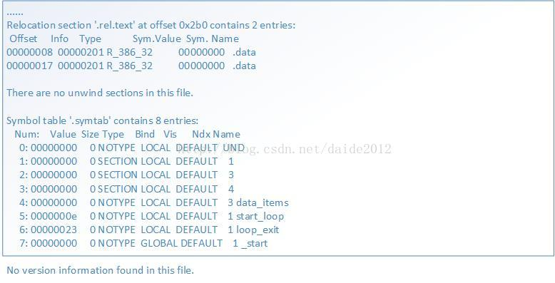
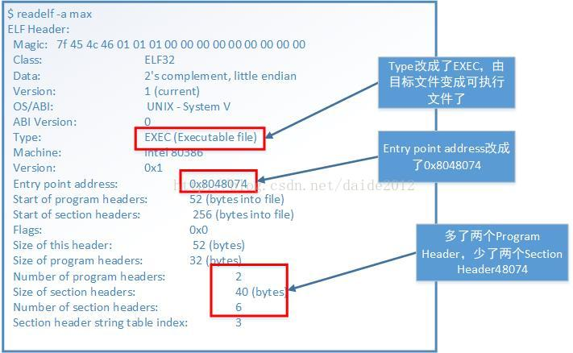
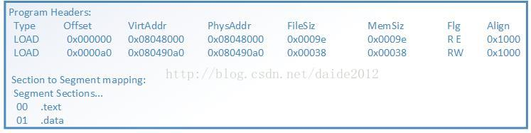
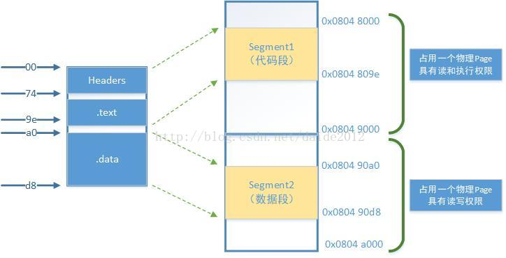
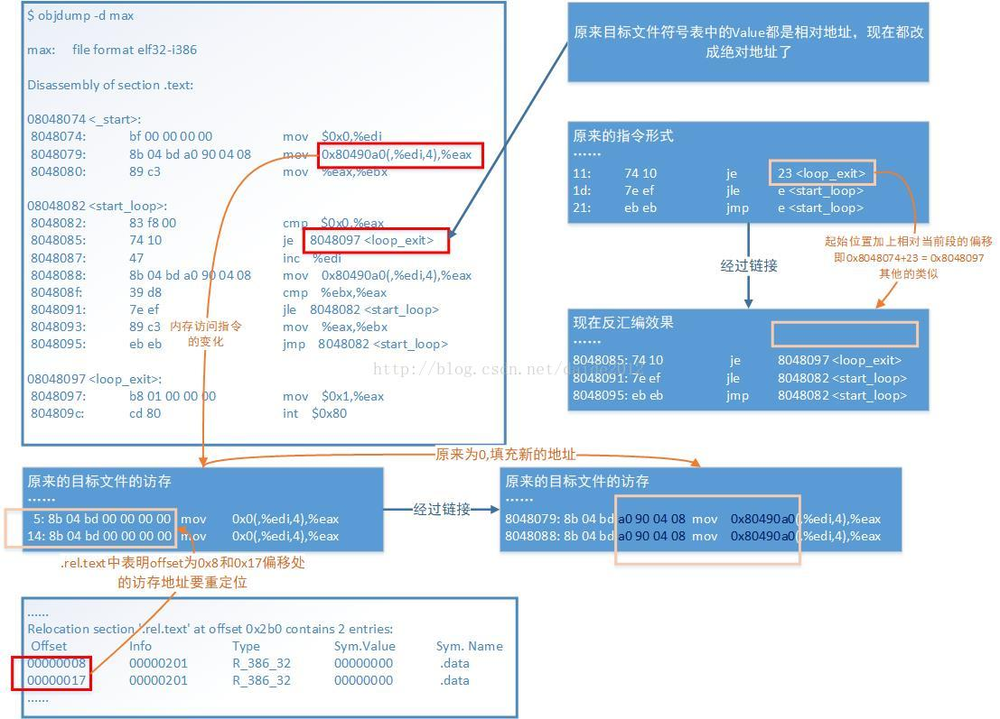

ELF 文件初识¶
本文为转载，存在部分修改，仅供个人使用
1 引言¶
在讲解 ELF 文件格式之前，我们来回顾一下，一个用 C 语言编写的高级语言程序从编写到打包、再到编译执行的基本过程。我们知道在 CPU 上执行的是低级别的机器语言，从高级语言到低级别的机器语言肯定是要经过翻译过程，这个过程大体的过程如下图所示:
在 Unix 系统中，从源文件到可执行目标文件是由编译驱动程序完成的，如大名鼎鼎的 gcc，翻译过程包括图中的四个阶段；
1.1 预处理阶段¶
预处理器（cpp）根据以字符 #开头的命令修给原始的C程序，结果得到另一个C程序，通常以 .i 作为文件扩展名。
主要是进行 文本替换、宏展开、删除注释 这类简单工作。
对应的命令：linux> gcc -E hello.c hello.i
1.2 编译阶段¶
编译器将文本文件 hello.i 翻译成 hello.s，包含相应的汇编语言程序
对应的命令： linux> gcc -S hello.c hello.s
1.3 汇编阶段¶
将 .s 文件翻译成机器语言指令，把这些指令打包成一种叫做 可重定位目标程序的格式，并将结果保存在目标文件 .o 中（把汇编语言翻译成机器语言的过程）。
把一个源程序翻译成目标程序的工作过程分为五个阶段：
- 词法分析
- 语法分析
- 语义检查和中间代码生成
- 代码优化
- 目标代码生成
主要是进行 词法分析 和 语法分析，又称为源程序分析，分析过程中发现有语法错误，给出提示信息。
对应的命令： linux> gcc -c hello.c hello.o
1.4 链接阶段¶
此时 hello 程序调用了 printf 函数。printf 函数存在于一个名为 printf.o 的单独的预编译目标文件中。
链接器（ld） 就负责处理把这个文件并入到 hello.o 程序中，结果得到 hello 文件，一个可执行文件。最后可执行文件加载到储存器后由系统负责执行, 函数库一般分为 静态库 和 动态库 两种。
静态库 是指编译链接时，把库文件的代码全部加入到可执行文件中，因此生成的文件比较大，但在运行时也就不再需要库文件了。其后缀名一般为 .a。
动态库 与之相反，在编译链接时并没有把库文件的代码加入到可执行文件中，而是在程序执行时由运行时链接文件加载库，这样可以节省系统的开销。其一般后缀名为 .so，gcc 在编译时默认使用动态库。
2 目标文件¶
由上面的过程，我们可以看出在经过汇编器和连接器作用后都会输出一个目标文件，那这两个目标文件有什么样的区别呢？说到这里我们先引入目标文件的形式。
2.1 三种目标文件形式¶
- 可重定位目标文件：包含二进制代码和数据，其形式可以和其他目标文件进行合并，创建一个可执行目标文件。
- 可执行目标文件：包含二进制代码和数据，可直接被加载器加载执行。
- 共享目标文件：可被动态的加载和链接（本文暂时不讨论）。
由此可知由汇编器生成的就是 可重定位目标文件，经过链接器作用后才生成 可执行目标文件。
2.2 链接器的作用¶
链接器的作用就是以一组可重定位目标文件作为输入，生成可加载和运行的可执行目标文件，具体需要完成以下两个工作：
- 符号解析：符号解析的目的是将目标文件中每个符号（静态变量、函数、全局变量）和其定义进行关联。
- 重定位：将每个符号的定义与具体在虚拟内存中的位置进行关联。
最终生成可执行目标文件。
说到这里好像还是没有说清楚这两种目标文件有什么区别，我们还是先把这个问题放一下，相信你看完下一节，应该会有答案，下面我们开始引入目标文件即 ELF 文件。
3 ELF文件¶
3.1 命名格式¶
目标文件在不同的系统或平台上具有不同的命名格式。
在 Unix 和 x86-64 Linux 上目标文件统称为 ELF (Executable and Linkable Format, ELF)。
3.2 文件视角¶
ELF 文件格式提供了三种不同的视角，即可重定位目标文件和可执行目标文件（以及不讨论的共享目标文件）。
在汇编器和链接器看来，ELF 文件是由 Section Header Table 描述的一系列 Section 的集合，即可重定位目标文件。
而执行一个 ELF 文件时，在加载器（Loader）看来它是由 Program Header Table 描述的一系列 Segment 的集合，即可执行目标文件。
关于 Section 和 Segment
我们在汇编程序中用 .section声明的 Section 会成为目标文件中的 Section。此外汇编器还会自动添加一些 Section（比如符号表）。
Segment 是指在程序运行时加载到内存的具有相同属性的区域，由一个或多个 Section 组成。比如有两个 Section 都要求加载到内存后可读可写，就属于同一个 Segment。有些 Section 只对汇编器和链接器有意义，在运行时用不到，也不需要加载到内存，那么就不属于任何 Segment。

- 汇编器和链接器视角（上图左侧）
开头的 ELF Header 描述了体系结构和操作系统等基本信息，并指出 Section Header Table 和 Program Header Table 在文件中的什么位置。
Program Header Table 在汇编和链接过程中没有用到。
Section Header Table 中保存了所有 Section 的描述信息。
- 加载器视角（上图右侧）
开头是 ELF Header。
Program Header Table 中保存了所有 Segment 的描述信息。
Section Header Table 在加载过程中没有用到。
注意
Section Header Table 和 Program Header Table 并不是一定要位于文件开头和结尾的，其位置由 ELF Header 指出，上图这么画只是为了清晰。
可重定位目标文件需要链接器做进一步处理，所以一定有 Section Header Table。
可执行目标文件需要加载运行，所以一定有 Program Header Table。
而共享库目标文件既要加载运行，又要在加载时做动态链接，所以既有 Section Header Table 又有 Program Header Table。
3.3 可重定位目标文件¶
3.3.1 文件布局¶
下面用 readelf工具读出可重定位目标文件 max.o 的 ELF Header 和 Section Header Table，然后我们逐段分析。

接下来我们来看 Section Header Table 格式。

从 Section Header 中读出各 Section 的描述信息。
其中 .text和 .data是我们在汇编程序中声明的 Section，而其它 Section 是汇编器自动添加的。
Addr是这些段加载到内存中的地址（我们讲过程序中的地址都是虚拟地址），加载地址要在链接时填写，现在空缺，所以是全0。
Off和 Size两列指出了各 Section 的文件地址，比如 .data从文件地址 0x60 开始，一共 0x38 个字节。翻一下程序，.data中定义了 14 个 4 字节的整数，一共是 56 个字节，也就是 0x38 个。
根据以上信息可以描绘出整个可重定位目标文件的布局。
| 起始文件地址 | Section 或 Header |
|---|---|
| 0 | ELF Header |
| 0x34 | .text |
| 0x60 | .data |
| 0x98 | .bss（此段为空） |
| 0x98 | .shstrtab |
| 0xc8 | Section Header Table |
| 0x208 | .symtab |
| 0x288 | .strtab |
| 0x2b0 | .rel.text |
这个文件不大，我们直接用 hexdump工具把可重定位目标文件的字节全部打印出来看。
3.3.2 .shstrtab 和 .strtab¶
.shstrtab和 .strtab这两个 Section 中存放的都是 ASCII 码：

可见 .shstrtab中保存着各 Section 的名字，.strtab中保存着程序中用到的符号的名字。每个名字都是以 '\0'结尾的字符串。
我们知道，C语言的全局变量如果在代码中没有初始化，就会在程序加载时用 0 初始化。
这种数据属于 .bss段，在加载时它和 .data段一样都是可读可写的数据，但是在ELF文件中 .data段需要占用一部分空间保存初始值，而 .bss段则不需要。
也就是说，.bss段在文件中只占一个 Section Header 而没有对应的 Section，程序加载时 .bss段占多大内存空间在 Section Header 中描述。在我们这个例子中没有用到 .bss段，以后我们会看到这样的例子。
3.2.3 .rel.text和 .symtab¶
我们继续分析 readelf输出的最后一部分，是从 .rel.text和 .symtab这两个 Section 中读出的信息。

.rel.text告诉链接器指令中的哪些地方需要重定位，我们在下一节讨论。
.symtab是符号表。Ndx列是每个符号所在的 Section 编号。例如 data_items在第 3 个 Section 里（也就是 .data）。各 Section 的编号见 Section Header Table。
Value列是每个符号所代表的地址。在目标文件中，符号地址都是相对于该符号所在 Section 的相对地址。比如 data_items位于 .data段的开头，所以地址是0。_start位于 .text段的开头，所以地址也是0。
但是 start_loop和 loop_exit相对于 .text段的地址就不是0了。从 Bind这一列可以看出 _start这个符号是 GLOBAL的，而其它符号是 LOCAL的。
小提示
GLOBAL符号是在汇编程序中用 .globl指示声明过的符号。
3.3.3 .text节¶
通过使用 objdump工具可以把程序中的机器指令进行反汇编（Disassemble），得到其汇编代码。

3.4 可执行目标文件¶
生成可执行目标文件之后，ELF 文件信息也发生了相应变化
3.4.1 ELF Header¶
先看可执行目标文件中 ELF Header 的变化。

3.4.2 Section Header¶
再看 Section Headers 的变化。

.text和 .data的加载地址分别改成了 0x0804 8074和 0x0804 90a0。
.bss段没有用到，所以被删掉了。
.rel.text段就是用于链接过程的，链接完了就没用了，所以也删掉了。
3.4.3 Program Header¶
再看多出来的两个 Program Headers。

多出来的 Program Header Table 描述了两个 Segment 的信息。
.text段和前面的 ELF Header、Program Header Table 一起组成一个 Segment（FileSiz指出总长度是 0x9e），.data段组成另一个 Segment（总长度是 0x38）。
VirtAddr列指出第一个 Segment 加载到虚拟地址 0x0804 8000（注意在 x86 平台上后面的 PhysAddr列是没有意义的），第二个 Segment 加载到地址 0x0804 90a0。
Flg列指出第一个 Segment 的访问权限是可读可执行，第二个 Segment 的访问权限是可读可写。
最后一列 Align的值 0x1000（4K）是 x86 平台的内存页面大小。
3.4.4 映射关系¶
在加载时要求文件中的一页对应内存中的一页，对应关系如下图所示。

这个可执行目标文件很小，总共也不超过一页大小，但是两个 Segment 必须加载到内存中两个不同的页面，因为 MMU 的权限保护机制是以页为单位的，一个页面只能设置一种权限。
此外还规定每个 Segment 在文件页面内偏移多少，那么加载到内存页面仍然偏移多少。比如第二个 Segment 在文件中的偏移是 0xa0，在内存页面 0x0804 9000中的偏移仍然是 0xa0，所以是从 0x0804 90a0开始，这样规定是为了简化链接器和加载器的实现。
从上图也可以看出 .text段的加载地址应该是 0x0804 8074，也正是 _start符号的地址和程序的入口地址。
可重定位目标文件符号表中的 Value都是相对地址，在可执行目标文件中都改成绝对地址了。此外还多了三个符号 __bss_start、_edata和 _end，这些是在链接过程中添进去的，加载器可以利用这些信息把 .bss段初始化为0。
3.4.5 反汇编结果¶
再看一下用 objdump得到的可执行目标文件反汇编的结果：

到此为止ELF文件的问题已介基本介绍（未对共享库目标文件进行讨论）。